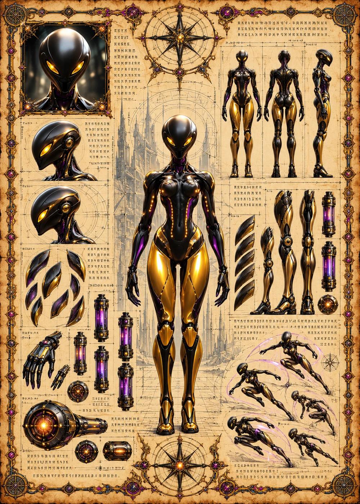

©
©
GENEZYS ARCHIVE · Earth 2 · Synthbot
Zychron
Nether Herald

Archive record
Zychron announces the coming of the void, and then delivers it. The Abyss Surge floods the whole battlefield with void energy at once. The Nexus speaks through many pilots, but when Zychron speaks, all of them go quiet.
Combat signature
Abyss Surge
140 Cosmara
200 Animus
280 Vitalis
Focuses on area with void energy: Deals 90 damage to all.
Genezys 08:05 ™&©2026LEGIONS
